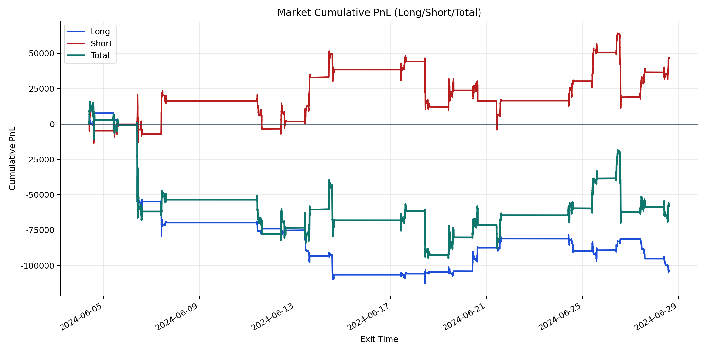
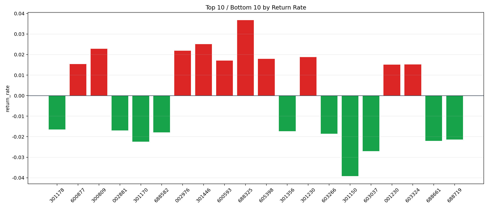

| repo_root | /home/haoranyou/data/output/alpha0.4_1w_5s_3ticks |
|---|---|
| period_months | 1 |
| period_label | 2024-06-04_to_2024-06-28 |
| start_time | 2024-06-04 09:50:12 |
| end_time | 2024-06-28 15:00:00 |
| n_trades | 67224 |
| n_symbols | 1911 |
| total_pnl | -57925.17389999949 |
| long_total_pnl | -104098.01719999989 |
| short_total_pnl | 46172.84330000038 |
| total_entry_notional | 626319127.0 |
| long_entry_notional | 239961080.0 |
| short_entry_notional | 386358047.0 |
| total_return_rate | -9.248507893644368e-05 |
| long_return_rate | -0.0004338120881936349 |
| short_return_rate | 0.00011950791153057149 |
| top_symbols_by_return | ["688325", "301446", "300809", "002976", "301230", "605398", "600593", "600877", "603324", "001230"] |
| bottom_symbols_by_return | ["301150", "603037", "301170", "688661", "688719", "603266", "688582", "301356", "002881", "301178"] |

